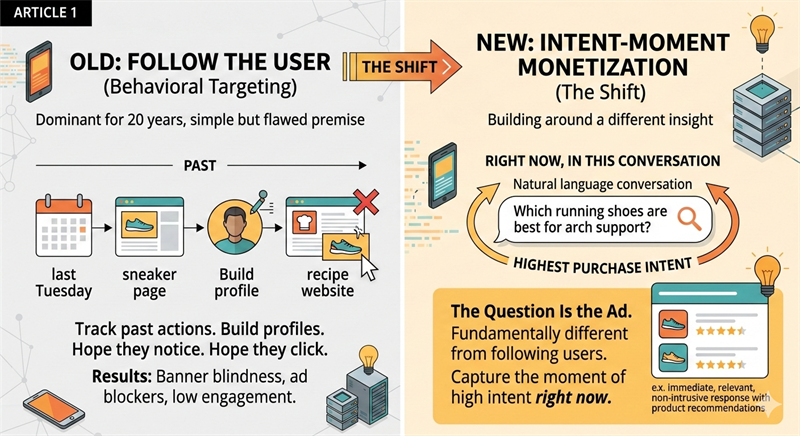

ad-tech
Why the Question Is the Ad

What is the direct answer?
For decades, digital advertising followed the user. The stronger play is the moment they ask a specific question in natural language. That is the highest purchase intent they will ever have.
What are the key takeaways?
- For decades, digital advertising operated on a simple but flawed premise: follow the user.
- Forward-thinking companies across retail, travel, and consumer health are abandoning the follow-the-user model entirely.
Why did behavioral targeting stop working?
For decades, digital advertising operated on a simple but flawed premise: follow the user.
Track what they browsed last Tuesday. Build a profile. Serve them a banner for running shoes on a recipe website because they once visited a sneaker page. Hope they notice. Hope they click. Most of the time, they do not.
The industry called this behavioral targeting, and it dominated digital advertising for twenty years. It also produced banner blindness, ad blockers, privacy regulations, and a growing public hostility toward online ads that never seems to improve.
What is the different insight?
Forward-thinking companies across retail, travel, and consumer health are abandoning the follow-the-user model entirely. They are building around a different insight: the moment a user asks a specific question in natural language is the moment of highest purchase intent they will ever have.
Not yesterday. Not last week. Right now, in this conversation.
That shift is not a better version of behavioral advertising. It is a fundamentally different thing.
The question is the targeting signal. You do not need a cookie trail if the user just typed what they want. A chatbot that can match a labelled partner offer to that question is selling the moment, not the profile.
Related: what AI chat ads actually are.
Frequently asked questions
What is this about?
For decades, digital advertising followed the user. The stronger play is the moment they ask a specific question in natural language. That is the highest purchase intent they will ever have.
Who is this for?
Readers who want the argument on the page, not a recap of the market.
What should I do next?
Read the piece. Then decide.
A chat-ad path that is not ChatGPT-priced
Indie chatbot apps still need labelled partner offers. ChatGPT-scale ad deals are out of reach. The SDK returns a labelled card or nothing. Three lines. The key stays on your server.